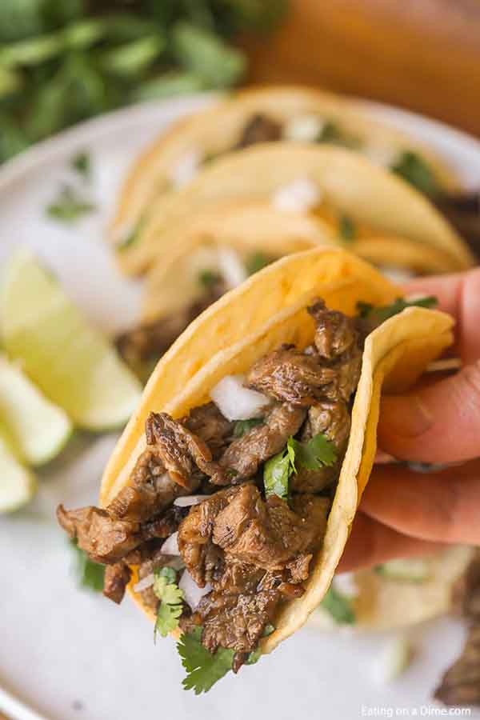

Street Tacos

Description
If you hate the Americanized version of tacos as much as I do, then these tacos are for you. They feed a lot
of people quickly, won't keep you in the kitchen or over the grill for an extended period of time. If you're
not a fan of steak meat, feel free to replace the carne asada with carnitas or chicken.
My version of this dish is the simpliest version, but you can add salsa, queso or any other sauce to your liking.
Ingredients
- Flank Steak
- Vegetable Oil
- Onions
- Limes
- Cilantro
- Seasoning
- Corn Tortillas
Steps
- Cut up flank steak and begin cooking in oiled skillet over medium heat.
- Add in desired amount of onions and seasoning to brown with the meat, as well as fresh lime juice.
- Pan fry tortillas briefly so they get warm but do not become hard.
- Spoon meat mixture into 1-2 corn tortillas and garnish with onions, lime juice and cilantro as desired.